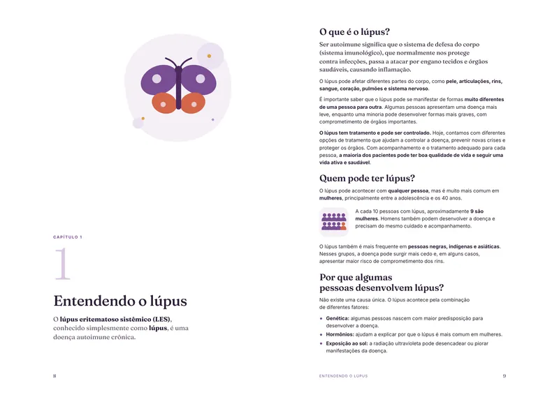
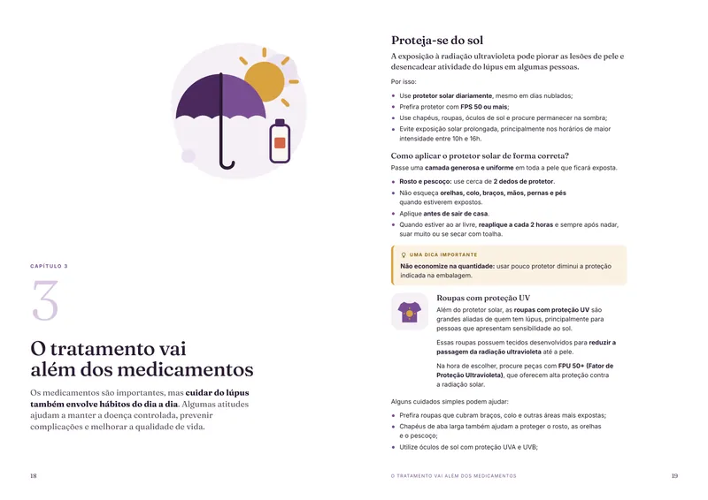
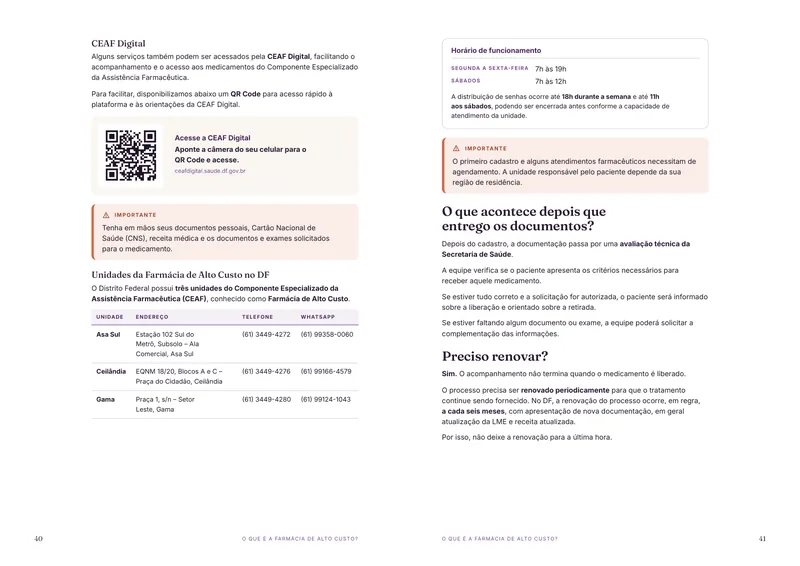

ANPLúpus
Associação com sede em Brasília que trabalha para acolher, informar, orientar e fortalecer pessoas que vivem com lúpus e seus familiares.
WhatsApp (61) 99380-9616
Cartilha gratuita · Distrito Federal
Entender a doença, participar do tratamento, conhecer seus direitos e saber onde buscar ajuda.

O que você encontra
“O lúpus faz parte da sua história, mas não define quem você é.”
Por dentro da cartilha
Cada capítulo responde a uma pergunta de quem vive com lúpus. Caixas de atenção, dicas e QR Codes levam direto aos serviços do Distrito Federal.


O símbolo da cartilha
A palavra “lúpus” vem do latim e significa “lobo”. O nome surgiu na Idade Média, quando os médicos comparavam as lesões da pele às marcas deixadas pela mordida de um lobo.
No século XIX, a medicina passou a descrever com mais precisão a manifestação mais conhecida da doença: uma vermelhidão que atravessa as bochechas e o nariz, desenhando no rosto o formato de uma borboleta de asas abertas. Até hoje ela é chamada de “asa de borboleta” (ou eritema malar).
Com o tempo, a borboleta deixou de ser apenas o nome de um sintoma e virou o símbolo mundial da luta contra o lúpus, ao lado da cor roxa, que marca o Maio Roxo e o Dia Mundial do Lúpus, celebrado em 10 de maio.
Eu escolhi a borboleta para esta cartilha por dois motivos. O primeiro é o óbvio: é o sinal que aprendemos a reconhecer no rosto de tantas pacientes. O segundo é o que importa de verdade.
A borboleta não nasce borboleta. Ela passa por uma transformação que ninguém vê de fora, e sai dela mais leve do que entrou. É assim que eu penso o caminho de quem recebe o diagnóstico de lúpus: um período de mudanças, de aprender a se conhecer de novo, de descobrir limites e também forças que não sabia que tinha.
Que este símbolo, que por tanto tempo marcou a doença, passe a marcar também a sua leveza. O lúpus faz parte da sua história, mas não define quem você é.
Dra. Paula Cristina MontinaMédica Reumatologista
Apoio além da consulta
Associação com sede em Brasília que trabalha para acolher, informar, orientar e fortalecer pessoas que vivem com lúpus e seus familiares.
WhatsApp (61) 99380-9616
Instituição sem fins lucrativos, criada em Brasília, que acolhe e orienta pacientes e famílias de pessoas com doenças raras e crônicas.
WhatsApp (61) 98201-3885